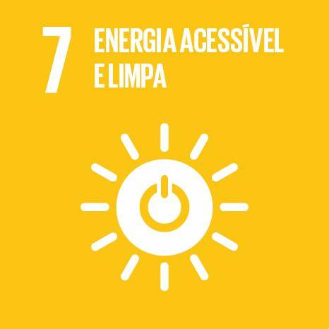
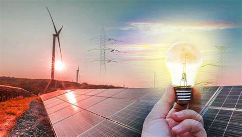
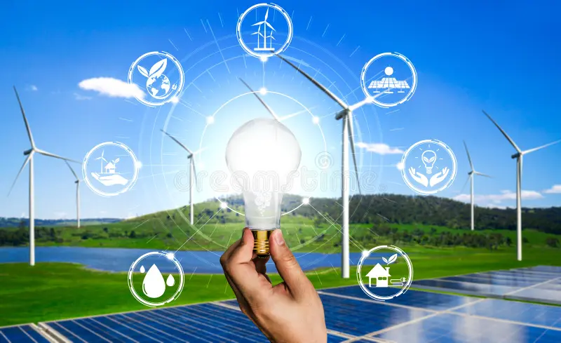

TIPOS DE ENERGIA
Hidraulica
Eólica

Solar
Meremotriz

Assegurar o acesso à energia limpa corresponde ao 7° dos Objetivos de Desenvolvimento Sustentável (ODS). As metas foram criadas pela Organização das Nações Unidas (ONU) para cumprir com os acordos feitos na Agenda 2030. Seu princípio consiste em “assegurar o acesso confiável, sustentável, moderno e a preço acessível à energia para todos”.
Diminuição dos impactos socioambientais causados pelas fontes de energia tradicionais e pela preservação dos recursos naturais deu início ao uso de fontes de energia alternativas e com baixo custo ambiental, chamadas energias limpas. Além de serem praticamente inesgotáveis, as energias limpas podem apresentar impacto ambiental muito baixo. Isso sem afetar o balanço térmico ou a composição atmosférica do planeta.
No Brasil, espera-se que os investimentos em energias limpas se ampliem. O país já é um dos que mais utilizam fontes renováveis em sua matriz energética, o que se deve, principalmente, à elevada participação das hidrelétricas na geração de eletricidade e no consumo de etanol em automóveis. Além disso, a energia eólica passou por um forte crescimento nos últimos anos, tornando-se uma das principais geradoras de eletricidade da região Nordeste.
"Desbravando novos mares" estudando programação na elas na Tech, mãe de dois meninos,38 anos e trabalho operadora de caixa na empresa Logmais da Prosegur.